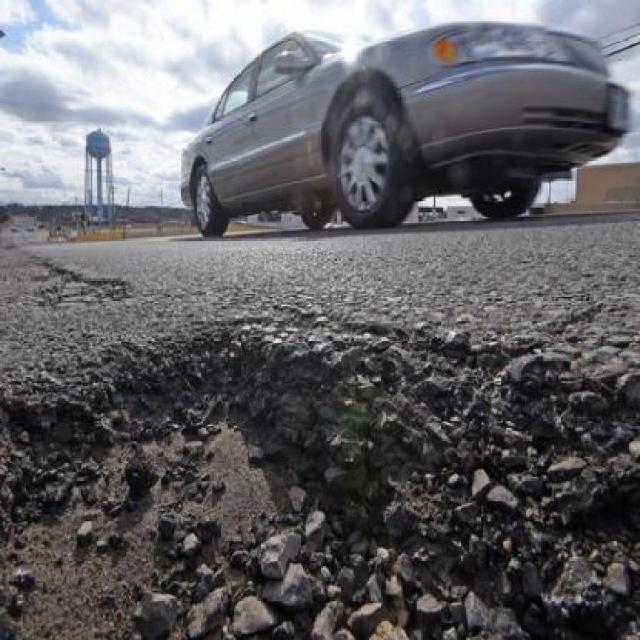
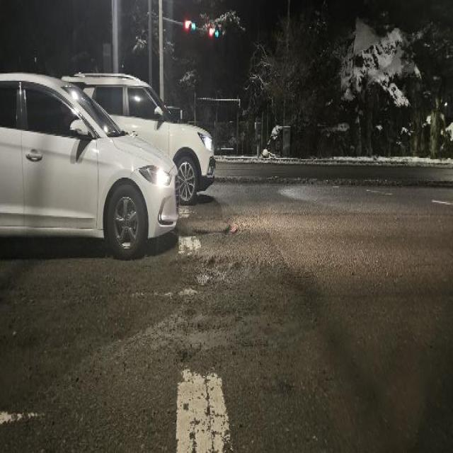
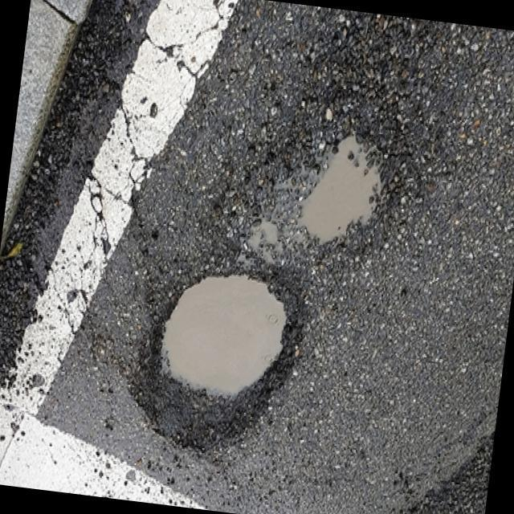
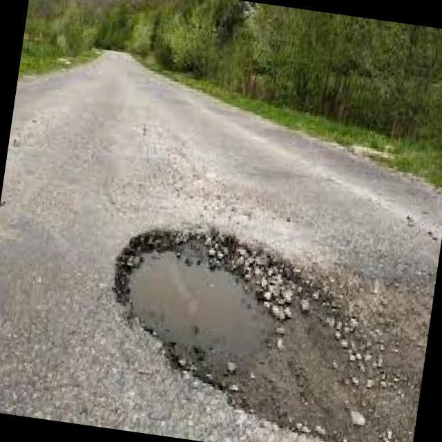

Empowering Safe Roads with AI Pothole Detection
Utilizing high-performance deep neural networks (YOLOv11) to inspect pavement distresses, classify risk thresholds, and automate infrastructure maintenance in real-time.
Core Intelligence Capabilities
Designed for real-time edge processing and autonomous municipal fleet integrations.
Real-time YOLOv11 Model
Powered by the latest YOLOv11 Nano architecture. Delivers sub-50ms inference times on modern GPUs and under 300ms on CPU edges.
Risk Severity Assessment
Automatically flags roads into safety levels (Safe, Moderate, Danger) based on pothole frequency density and prediction confidence scores.
All-Weather Robustness
Trained with extensive dataset augmentations (blur, brightness adjustment, scale transitions) ensuring detection under Rain, Dusk, and Night conditions.
How It Works
Simple three-step workflow from raw image ingest to structured API payloads.
Ingest Road Imagery
Drag & drop or upload road photos. Supports common high-res digital formats (JPEG, JPG, PNG).
AI Bounding Box Generation
FastAPI parses inputs and executes YOLOv11. Overlays red bounding highlight zones around distress areas.
Review Logs & Export
Export precise coordinates and telemetry stats, or integrate directly using our developer API.
Drag & drop road image here
Supports JPG, JPEG, PNG formats
Browse FilesTest on a sample image:

Daytime
Nighttime
Rainy
Close-upYOLOv11 Pothole Detector
Learn about the neural network structure, training configurations, and local parameters driving this application.
Model Architecture
| Framework | Ultralytics YOLOv11 |
| Model Size | Nano (yolo11n.pt) |
| Parameters Count | ~2.6 Million |
| Resolution | 640 x 640 pixels |
| Inference Time | ~15-40ms (Device dependent) |
| Weight Size | 5.2 MB (highly optimized) |
Training & Validation Metrics
Training Details
The model was trained on a highway road condition dataset focusing specifically on identifying asphalt pavement distresses (potholes, severe cracks). Augmentations including brightness adjustment, blur, scaling, and flip transformations were utilized to ensure model robustness under diverse environmental and weather conditions (Rain, Night, Dusk).
Developer Integration Portal
Build applications on top of the RoadVision detection endpoint. Integration takes just a few lines of code.
API Specifications
Request Parameters (POST /detect)
| Parameter | Type | Location | Description |
|---|---|---|---|
file |
binary | multipart/form-data | Required. The road image to run YOLO inference on. |
conf |
float | query parameter | Optional. Confidence threshold. Defaults to 0.25. |
Response Payload (JSON)
{
"count": 2,
"detections": [
{
"confidence": 0.892,
"bbox": [124.5, 301.2, 250.0, 480.5],
"class": "pothole"
}
],
"image": "iVBORw0KGgoAAAANSUhEUgAA...", // Base64 Jpeg
"inference_time_ms": 32.4
}curl -X POST "http://localhost:8008/detect?conf=0.25" \
-H "accept: application/json" \
-H "Content-Type: multipart/form-data" \
-F "file=@road_image.jpg;type=image/jpeg"import requests
url = "http://localhost:8008/detect"
params = {"conf": 0.25}
with open("road_image.jpg", "rb") as f:
files = {"file": f}
response = requests.post(url, files=files, params=params)
data = response.json()
print(f"Detected {data['count']} potholes")
# Base64 image payload is inside data['image']const fileInput = document.querySelector('input[type="file"]');
const formData = new FormData();
formData.append('file', fileInput.files[0]);
const response = await fetch('http://localhost:8008/detect?conf=0.25', {
method: 'POST',
body: formData
});
const data = await response.json();
console.log(`Detected ${data.count} potholes`);
// Display base64 jpeg: "data:image/jpeg;base64," + data.image